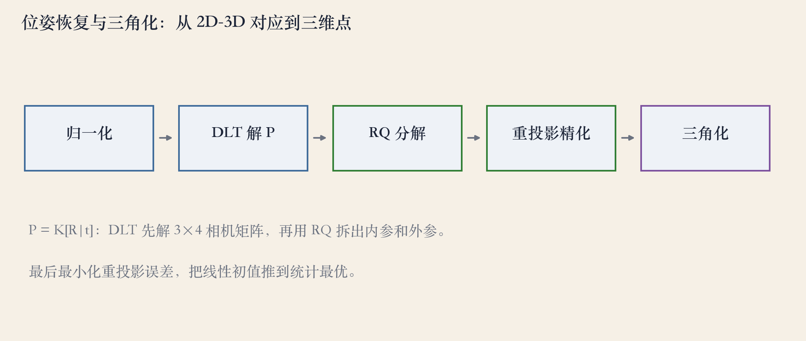
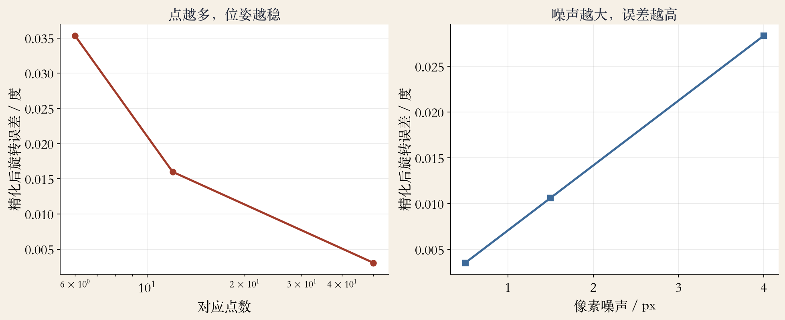
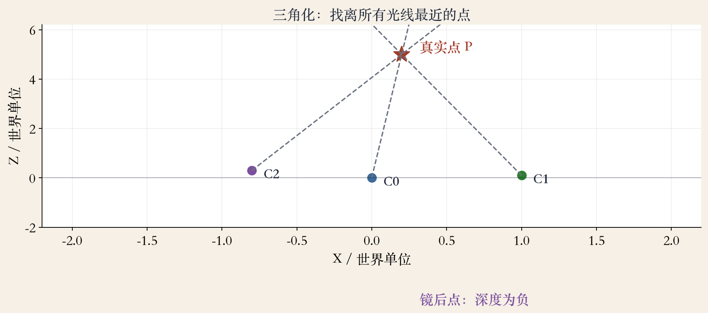

第 11 章 · 外参标定
位姿恢复：相机在哪里
- 已知 3D 点和图像的 2D 位置，反推相机。
- 三对点叫 P3P，点更多叫 PnP。
- 上一集估 F 或 E，这一集恢复位姿。
- 还能用于增强现实和位置识别。
依据：原书第 693 页
两条任务
相机怎么动：外参
点在哪里：三角化
输入：3D-2D 对应
位姿估计 · 五步管线
五步管线：从对应到三维点
- 先把 3D 点和图像点归一化。
- DLT 解 3×4 的相机矩阵 P。
- RQ 分解拆出 K 和 R。
- 精化后，用多视角三角化出点。
依据：原书第 693–694 页

位姿与三角化五步：归一化→DLT→RQ→精化→三角化｜程序生成，未用教材或论文原图
线性解 · 十二个未知量
DLT：十二个未知量
- 每对 3D-2D 点给两个线性方程。
- 相机矩阵有 12 个未知量，差一个尺度。
- 六对点是 DLT 的最小配置。
- 点多了用 SVD 取最小奇异向量。
依据：原书第 693–694 页
另一种写法
图像点与三维射线叉乘
最小化夹角的正弦平方
先解矩阵，再拆参数
拆矩阵 · 位姿
拆矩阵：RQ 与 P3P
- P 等于 K 乘 R 和 t，K 是上三角。
- 对 P 的前 3×3 做 RQ 分解。
- K 已知时，三对点就够，叫 P3P。
- 最小解怕噪声，还有 bas-relief 歧义。
依据：原书第 694–695 页
还要处理
对角线取正、尺度归一
检查 R 的行列式为正一
第四个点用来选解
非线性 · 重投影
精化：把初值推到可用
- 最准的做法是直接最小化重投影误差。
- 对 R、t 和可选的 K 做非线性最小二乘。
- 残差是预测像素减观测像素。
- 旋转用增量更新，别直接对矩阵求导。
依据：原书第 695–697 页
四步链式求导
平移 → 旋转 → 透视除法 → 内参
估相机中心 c 比估 t 更自然
有外点用鲁棒核，有协方差就加权
合成位姿 · 6 对点
实验：精化前后差多少
- 6 对点，加 1 像素噪声。
- DLT 旋转误差 0.226 度，重投影 20.2 像素。
- 精化后降到 0.035 度和 0.96 像素。
- 30 次随机试验取中位数。
依据：本集实验
为什么差这么多
6 对点刚够定解
噪声被 12 个未知量放大
0.96 像素已接近噪声地板
合成位姿 · 多组中位数
实验：点数和噪声的影响
- 6 对 0.035 度，12 对 0.016 度。
- 50 对再降到 0.003 度。
- 噪声 0.5 到 1.5 到 4 像素：0.004、0.011、0.028 度。
- 点越多越稳，但收益递减。
依据：本集实验

点数 6/12/50 与噪声 0.5/1.5/4：精化后旋转误差｜程序生成，未用教材或论文原图
外点 · 鲁棒损失
外点：让鲁棒损失降权
- 30 个点，20% 外点，偏移 50 像素。
- 普通最小二乘：0.048 度，内点 5.28 像素。
- soft-L1：0.010 度，内点 1.54 像素。
- 阈值要按内点噪声设。
依据：原书第 695 页（鲁棒核）；本集实验
工程顺序
RANSAC 先粗筛
鲁棒核再精修
最后抽查重投影图
光线 · 最小二乘
三角化：找离光线最近的点
- 已知位姿和图像点，求三维点。
- 最直接的做法：找离所有光线最近的点。
- 光线方向是归一化的 R^T K^-1 x。
- 平方距离堆成 3×3 线性最小二乘。
依据：原书第 701–702 页
合成三角化 · 2/3 视角
实验：多视角更稳
- 干净数据上，误差接近机器精度。
- 1 像素噪声：两视角中位 0.032 世界单位。
- 三个视角降到 0.016，差不多减半。
- 远点条件数从 9.9 涨到 1000.6。
依据：本集实验；原书第 703 页

三角化几何：多视角约束、远点条件数与镜后点｜程序生成，未用教材或论文原图
cheirality · 深度符号
失败边界：先看深度符号
- 重建点必须在所有相机前方。
- 光线发散或点在背后，就放到无穷远。
- 真点深度 +4.81，镜后点 -5.39。
- 诊断看误差、深度符号、条件数。
依据：原书第 703 页；本集实验
常见失败
对应点错、点太少
纯旋转、基线太短
外点没处理
收束 · 下一集
位姿与三角化收束
- DLT 加 RQ：从对应恢复位姿。
- 重投影精化把初值推到可用精度。
- 三角化找离所有光线最近的点。
- 做完还要检查深度符号。
依据：原书第 693–703 页